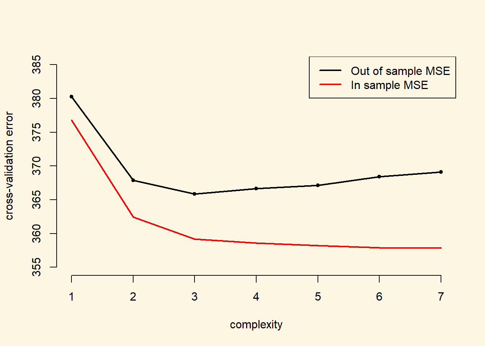
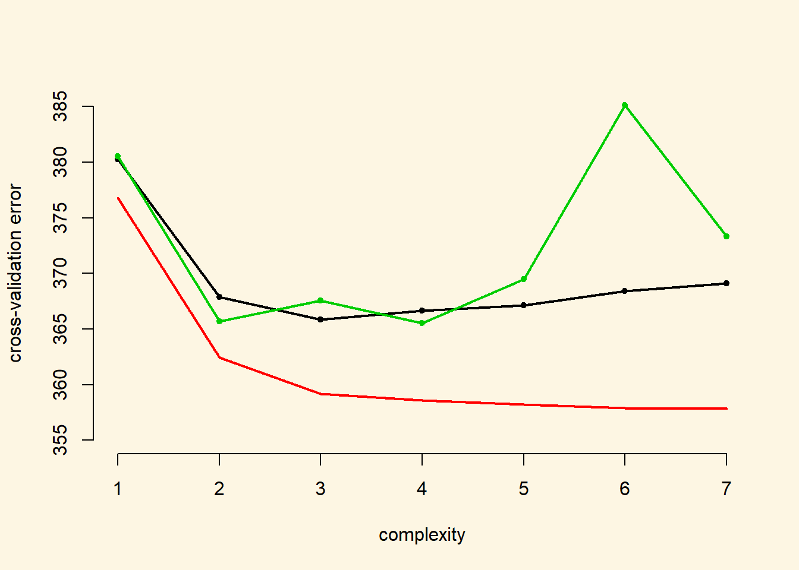

Chapter 3 Cross-Validation
3.1 Seminar
We start by clearing our workspace.
3.1.1 The Validation Set Approach
We use a subset of last weeks non-western immigrants data set (the version for this week includes men only). We can use the head() function to have a quick glance at the data. Download the data here
The codebook is:
| Variable Name | Description |
|---|---|
| IMMBRIT | Out of every 100 people in Britain, how many do you think are immigrants from Non-western countries? |
| over.estimate | 1 if estimate is higher than 10.7%. |
| RAge | Age of respondent |
| Househld | Number of people living in respondent’s household |
| Cons, Lab, SNP, Ukip, BNP, GP, party.other | Party self-identification |
| paper | Do you normally read any daily morning newspaper 3+ times/week? |
| WWWhourspW | How many hours WWW per week? |
| religious | Do you regard yourself as belonging to any particular religion? |
| employMonths | How many mnths w. present employer? |
| urban | Population density, 4 categories (highest density is 4, lowest is 1) |
| health.good | How is your health in general for someone of your age? (0: bad, 1: fair, 2: fairly good, 3: good) |
| HHInc | Income bands for household, high number = high HH income |
We first select a random sample of 239 out of 478 observations (check that that’s half the observations in our dataset using nrow(data2)). We initialize the random number generator with a seed using set.seed() to ensure that repeated runs produce consistent results.
# initialize random number generator
set.seed(1)
# pick 239 numbers out of 1 to 478
train <- sample(478, 239)We then estimate the effects of age on the perceived number of immigrants per 100 Brits with lm() on the selected subset.
Next, we use our model that we trained on the training set to predict outcomes in the test set - the test set contains unseen data. We subset the dataset using square brackets such that it excludes the training observations. The - operator means except in this case. So data2[-tain, ] is the dataset excluding training observations.
Next, we compare our predictions on the test set to the real outcomes. Our loss function (evaluation metric) is the mean squared error (MSE):
\[ \frac{1}{n}\sum_{i=1}^{n}(y_i - \hat{y}_i)^2 \]
# mse in the validation (test) set
mse <- mean((data2$IMMBRIT[-train] - preds.lm)^2)
# error rate
mse[1] 435.4077The error rate for a linear model is 435.41. We can also fit higher degree polynomials with the poly() function. First, let’s try a quadratic model.
So far, we have modelled the relationship between RAge and IMMBRIT as linear. It is possible that the relationship is non-linear. We can model this using polynomials, i.e. raising RAge to some power. We start with the square. We could use the ^2 operator to raise RAge to the second power like so: data2$RAge^2. However, it’s generally not a good idea to do this because polynomials are correlated introducing collinearity into the model. We can avoid this using the poly() function which decorrelates the variable and its powers.
Let’s have a quick look at the regression table using the texreg package.
Version: 1.36.23
Date: 2017-03-03
Author: Philip Leifeld (University of Glasgow)
Please cite the JSS article in your publications -- see citation("texreg").
==========================
Model 1
--------------------------
(Intercept) 24.69 ***
(1.17)
poly(RAge, 2)1 25.21
(26.59)
poly(RAge, 2)2 59.89 *
(25.07)
--------------------------
R^2 0.03
Adj. R^2 0.02
Num. obs. 239
RMSE 17.92
==========================
*** p < 0.001, ** p < 0.01, * p < 0.05Interpreting polynomials is not straightforward because the effect is not linear, i.e. it is not constant. Here, poly(RAge, 2)1 is RAge and poly(RAge, 2)1 is the square of RAge. The effect is significant. However, to interpret the effect we would need to plot it. Instead, we will proceed by making predictions on the validation set (test set) again and calcuate the MSE.
[1] 391.8855Quadratic regression performs better than a linear model because it reduces the error (MSE) from 435.41 to 391.89 (10%). We move on to a cubic model.
# cubic model
m.lm3 <- lm( IMMBRIT ~ poly(RAge, 3), data = data2, subset = train)
mse3 <- mean( (data2$IMMBRIT[-train] - predict(m.lm3, data2[-train,]))^2 )
mse3[1] 412.7887According to our approach, the quadratic model is the best out of the three we tested. However, this might be due to the training/test split that we made. We will try again using a different split of the data.
# fit the models on a different training/test split
set.seed(2)
train <- sample(478, 239)
m.lm <- lm( IMMBRIT ~ RAge, data = data2, subset = train)
mse <- mean( (data2$IMMBRIT[-train] - predict(m.lm, data2[-train,]) )^2 )
# quadratic
m.lm2 <- lm( IMMBRIT ~ poly(RAge, 2), data = data2, subset = train)
mse2 <- mean( (data2$IMMBRIT[-train] - predict(m.lm2, data2[-train,]))^2 )
# cubic
m.lm3 <- lm( IMMBRIT ~ poly(RAge, 3), data = data2, subset = train)
mse3 <- mean( (data2$IMMBRIT[-train] - predict(m.lm3, data2[-train,]))^2 )
# outut
output <- cbind( mse, mse2, mse3 )
colnames(output) <- c("linear", "quadratic", "cubic")
output linear quadratic cubic
[1,] 413.6691 399.0577 394.3029Clearly, the results are different from our initial run. Not only, are the error rates different but in addition, the order of the models changes. In this trial, the cubic model performs best. It appears that we need to split data more often to determine which is the best model overall. We will move on to leave-one-out cross-validation which does exactly that.
3.1.2 Leave-One-Out Cross-Validation (LOOCV)
In LOOCV, we train our model on all but the first observation and subsequently predict the first observation using our model. Next, we train our model on all but the second observation and predict the second observation with that model and so forth for every observation in the dataset. That means, we must estimate as many models as we have observations in the dataset. While there are some tricks to make the computation faster for linear models, LOOCV can take a long time to run.
Before we get into it, we quickly introduce a new function. The glm() function offers a generalization of the linear model while allowing for different link functions and error distributions other than gaussian. By default, glm() simply fits a linear model identical to the one estimated with lm(). Let’s confirm this quickly.
glm.fit <- glm( IMMBRIT ~ RAge, data = data2)
lm.fit <- lm( IMMBRIT ~ RAge, data = data2)
texreg::screenreg( list(glm.fit, lm.fit), custom.model.names = c("GLM", "LM") )
=========================================
GLM LM
-----------------------------------------
(Intercept) 25.83 *** 25.83 ***
(2.88) (2.88)
RAge -0.03 -0.03
(0.05) (0.05)
-----------------------------------------
AIC 4197.88
BIC 4210.39
Log Likelihood -2095.94
Deviance 180117.97
Num. obs. 478 478
R^2 0.00
Adj. R^2 -0.00
RMSE 19.45
=========================================
*** p < 0.001, ** p < 0.01, * p < 0.05The coefficient estimates are similar but the fit statistics that are reported differ. Generally a GLM maximises the likelihood whereas LM minimises the sum of squared deviations from the regression line. Maximum likelihood estimation is more general and used in most statistical models.
We will use the glm() function from here on because it can be used with cv.glm() which allows us to estimate the k-fold cross-validation prediction error. We also need to install a new package called boot using install.packages("boot").
library(boot)
# use cv.glm() for k-fold corss-validation on glm
cv.err <- cv.glm(data2, glm.fit)
# cross-validation error
cv.err$delta[1] 380.2451 380.2415[1] 478The returned value from cv.glm() contains a delta vector of components - the raw cross-validation estimate and the adjusted cross-validation estimate respectively. We are interested in the raw cross-validation error.
NOTE: if we do not provide the option K in cv.glm() we automatically perfrom leave-one-out cross-validation (LOOCV).
We repeat this process in a for() loop to compare the cross-validation error of higher-order polynomials. The following example estimates the polynomial fit of the order 1 through 7 and stores the result in a cv.error vector.
We will also record the in-sample prediction error to illustrate that we do need to test our models using new data rather than improving them in-sample due to the bias-variance tradeoff.
# container for cv errors
cv.error <- NA
# container for in-sample MSE
in.sample.error <- NA
# loop over age raised to the power 1...7
for (i in 1:7){
glm.fit <- glm( IMMBRIT ~ poly(RAge, i), data = data2 )
# cv error
cv.error[i] <- cv.glm(data2, glm.fit)$delta[1]
# in-sample mse
in.sample.error[i] <- mean( (data2$IMMBRIT - predict(glm.fit, data2) )^2)
}Next, we plot the effect of increasing the complexity of the model. We also plot the in-sample error
# plot of error rates
plot( cv.error ~ seq(1, 7), bty = "n", pch = 20,
xlab = "complexity", ylab = "cross-validation error",
ylim = c(355, 385))
# cv error
lines( y = cv.error, x = seq(1,7), lwd = 2, col = 1)
# in-sample error
lines( y = in.sample.error, x = seq(1,7), lwd = 2, col = 2 )
# legend
legend("topright", c("Out of sample MSE", "In sample MSE"), col = c(1,2), lwd= 2)
Apparently, the cubic model performs best. We would have missed this using the initial split of the data into one training set and one test set. Futhermore, the in-sample MSE keeps decreasing the more complex we make our model (although with diminishing marginal returns). However, the more complex models start fitting ideosyncratic aspects of the sample (noise) and perform badly with new data.
3.1.3 k-Fold Cross-Validation
K-fold cross-validation splits the datset into k datasets. Common choices for k are 5 and 10. Using 5, we would split the data into five folds. We would then train our model on the first fold and predict on the remaining folds. Next, we would train our model on the second fold and predict on the four remaining ones and so on until we train on the fith fold and predict on the remaining folds. Each time we will get an error (e.g. MSE). We would then average over the five MSEs to obtain the overall k-fold cross-validation MSE.
In addition to LOOCV, cv.glm() can also be used to run k-fold cross-validation. In the following example, we estimate the cross-validation error of polynomials of the order \(1\) through \(7\) using \(10\)-fold cross-validation.
# re-initialize random number generator
set.seed(17)
# container for 10-fold cross-validation errors
cv.error.10 <- NA
# loop over 7 different powers of age
for (i in 1:7){
glm.fit <- glm( IMMBRIT ~ poly(RAge, i), data = data2)
cv.error.10[i] <- cv.glm( data2, glm.fit, K = 10)$delta[1]
}
cv.error.10[1] 380.5447 365.6740 367.5397 365.5214 369.5038 385.1270 373.3029We add the results to the plot:
# add to plot
points(x = seq(1,7), y = cv.error.10, col = 3, pch = 20)
lines( x = seq(1,7), y = cv.error.10, col = 3, lwd = 2)
The 10-fold cross-validation error is more wiggly. In this expample, it estimates the best performance with a square model of age wehreas the LOOCV errror finds a minimum at the cube of age. Eyeballing the results, we suggest that there are no substantial improvements beyond the squared term. However, using the cubic model would be an alternative.